智忆评——阿尔茨海默病认知评估与辅助诊断系统
CogMemory AD - Alzheimer's Cognitive Assessment and Clinical Decision Support System
面向客户与现场演示人员的中文图文指南。按本手册可完成登录、患者与访视查看、量表初始化、施测草稿、评分复核、认知域结果、临床报告及随访趋势演示。
适用范围与重要提示
本手册展示的是当前演示版本中已经实际接入的产品界面与工作流。截图全部来自虚构 DEMO 数据，不含真实患者资料。
DEMO-001 至 DEMO-008 仅用于产品演示，不对应任何真实患者或受试者。
推荐账号
doctor1 / demo123
用于演示完整临床链路，包括医生或管理员可执行的报告确认、锁定、来源冻结和归档能力。
操作后恢复
客户自由操作后，可由演示人员重新运行 seed:demo 恢复标准演示终态。
不可逆流程的演示前，请先确认是否允许客户试操作。
自动保存只保存当前题目的作答草稿；它不会自动提交量表、执行评分、计算认知域或生成临床报告。
客户试操作前应先确认。操作后如需恢复演示环境，请重新运行 DEMO seed。
手册内容
全部演示账号
所有演示账号统一密码为 demo123。
| 登录账号 | 界面显示身份 | 推荐用途 |
|---|---|---|
admin1 | 演示管理员一 | 展示管理员登录身份 |
admin2 | 演示管理员二 | 展示管理员登录身份 |
doctor1 | 演示医生一 | 推荐完整演示账号 |
doctor2 | 演示医生二 | 展示医生登录身份 |
nurse1 | 演示护士一 | 展示护士登录身份 |
nurse2 | 演示护士二 | 展示护士登录身份 |
research1 | 演示研究员一 | 展示研究助理登录身份 |
research2 | 演示研究员二 | 展示研究助理登录身份 |
doctor1 是推荐的完整演示账号；其他账号用于展示不同角色登录身份。页面是否允许具体操作，以当前界面和服务端权限结果为准。
推荐的 10 至 15 分钟演示路线
登录、轻量工作台与退出
- 打开系统登录页，在“账号”中输入
doctor1。 - 在“密码”中输入
demo123，点击“登录系统”。 - 进入工作台后，确认显示名称、账号和角色摘要。
- 点击“进入患者档案”开始临床流程；结束演示时点击右上方“退出登录”。
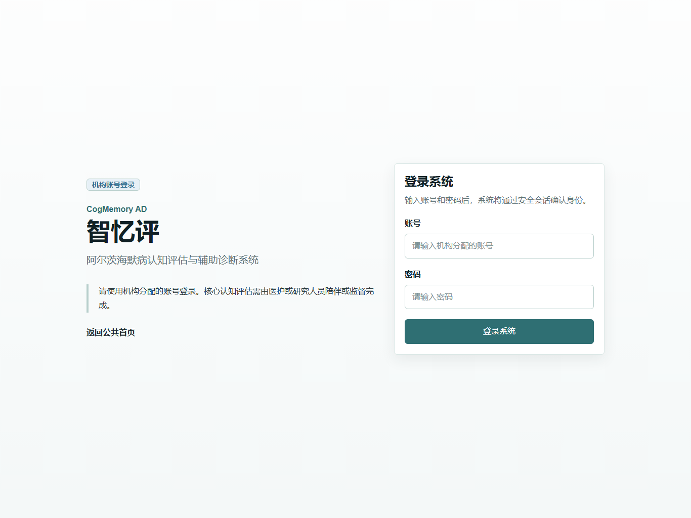
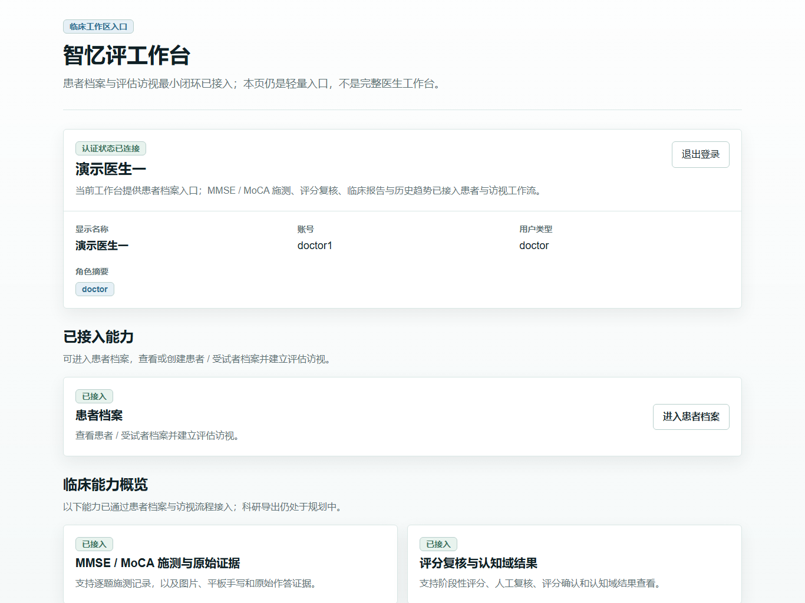
患者列表、患者详情与访视
- 从工作台点击“进入患者档案”。
- 使用关键词、患者状态或数据来源筛选列表；也可直接在表格中选择 DEMO 场景。
- 点击对应患者行的“查看”进入患者详情。
- 患者详情中可查看访视列表，并通过“打开访视”进入访视详情。
- DEMO-001 仅有患者档案。可点击“新建访视”，填写访视类型和评估日期后创建第一条访视。
创建访视会修改 DEMO 数据。若只做标准演示，可说明操作路径而不实际提交；如已提交，演示结束后重新运行 seed 恢复。
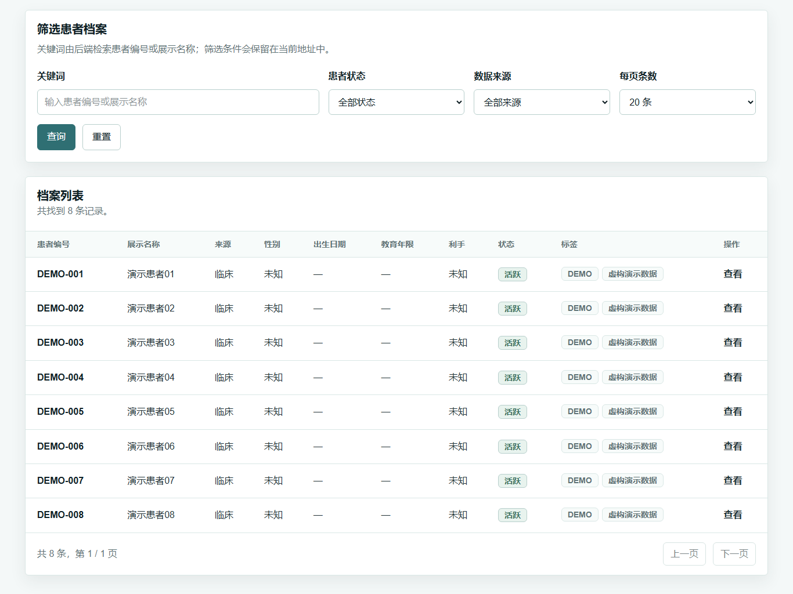
初始化 MMSE / MoCA
DEMO-002 已有一条草稿访视，但尚未初始化量表，适合讲解初始化入口。
- 在患者列表打开 DEMO-002，再打开其评估访视。
- 滚动到“量表初始化”区域，查看 MMSE 和 MoCA 的安全目录摘要。
- 在目标量表中选择施测方式。
- 点击“初始化量表实例”。初始化成功后，实例会出现在“已初始化量表实例”区域。
- 点击“打开量表”进入逐题施测页面。
标准演示可停留在按钮前讲解。如需现场试操作，完成后重新运行 seed 恢复 DEMO-002 的未初始化状态。
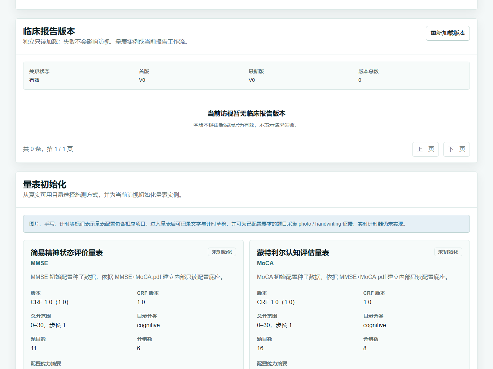
施测、自动保存、立即保存与计时
DEMO-003：MMSE
已有部分作答，适合演示继续施测、草稿自动保存和逐题计时。
DEMO-004：MoCA
已有部分作答，适合展示另一量表的分组、进度和施测页面。
- 打开量表后，先查看页首的未收口作答、未上传证据、未保存人工评分和未保存确认意见。
- 在题目卡片中记录原始回答、缺失原因或操作者备注。页面只保存原始作答，不在此处判断正确性或评分。
- 停止输入后观察保存状态从“未保存 / 等待自动保存 / 正在保存”变为“已保存”。
- 需要立即收口时，点击“保存草稿 / 保存修改”；需要把当前题标记完成时，点击“保存并标记本题完成”。
- 对支持计时的题目，可使用“开始计时、暂停计时、继续计时、完成计时”；运行中每 15 秒把实际用时快照进入同一题目保存队列。
- “复位计时”只清除当前题目的计时草稿，不修改作答内容或完成标记。
它不会正式提交量表、自动计算评分或认知域结果，也不会生成临床报告。
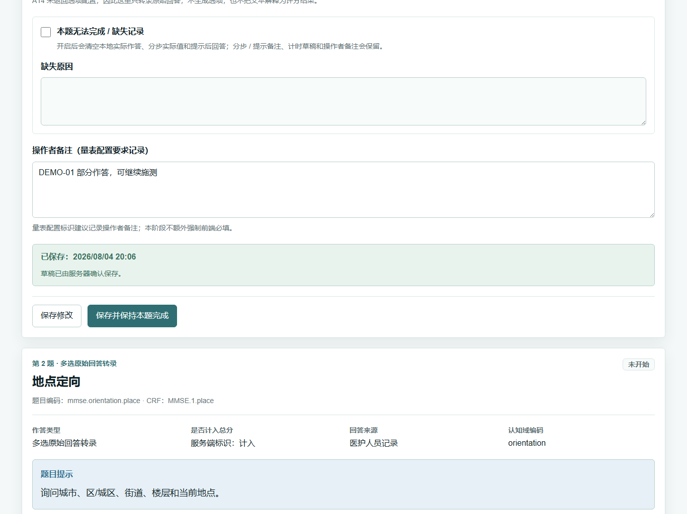
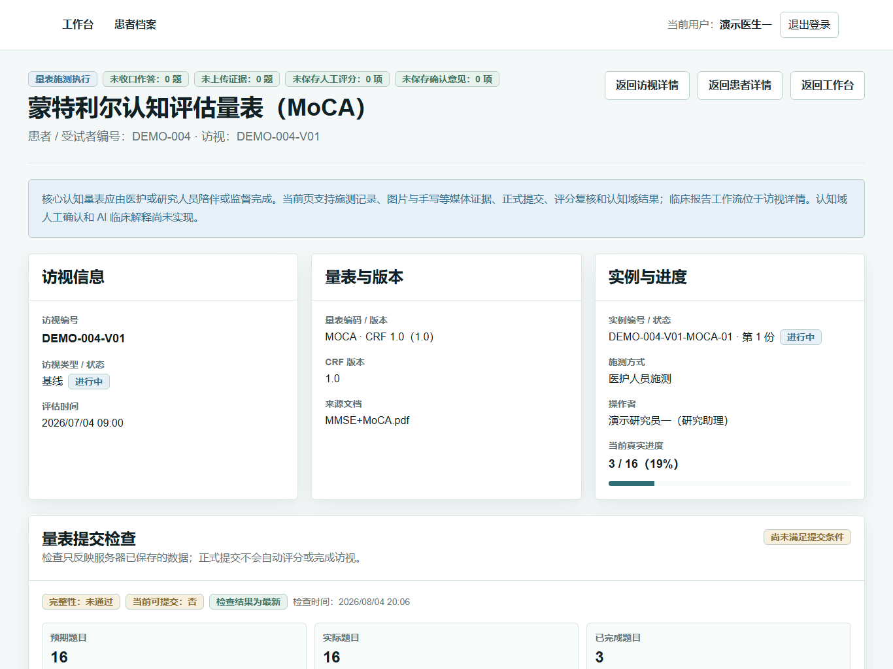
当前演示版本未在题目界面展示原始刺激图片，本次演示可跳过相关视觉材料。
这与页面已有的拍照上传、平板手写证据能力不是同一项能力；不得把二者混为一谈。
提交与评分复核
DEMO-005 已完成量表提交，并有一份“待复核”的阶段性评分结果。
- 在量表页面先查看“量表提交检查”。只有满足提交条件时才能正式提交。
- 提交量表后，题目作答进入只读；提交不会自动评分，也不会自动完成访视。
- 在“阶段性评分、人工复核与确认”区域查看总分、分组得分和需要复核的项目。
- 选择待复核项目，填写人工评分和复核依据，再保存人工评分。
- 待复核项处理完成后，按页面提示完成评分确认。评分确认不会自动计算认知域或生成报告。
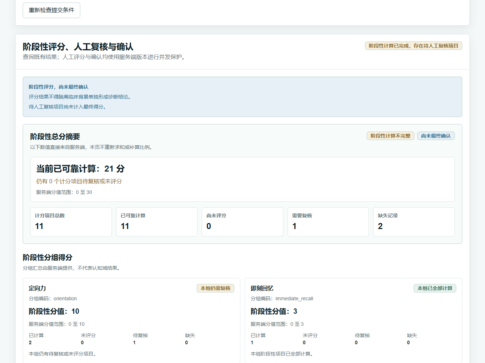
认知域结果
DEMO-006 已有确认评分和已计算的认知域结果，可直接查看安全说明、域分数与映射贡献。
- 打开 DEMO-006 的 MoCA 量表实例。
- 滚动到“认知域计算与安全展示”。
- 查看认知域分数、重叠归因说明和题目贡献。
- 如场景没有现成结果，必须先确认评分，并在认知域区域明确勾选首次计算确认；页面不会自动计算或重算。
一个题目可以归入多个认知域，各域可能重叠，不能跨域求和解释为量表总分。结果不得脱离量表、临床访谈和其他检查单独形成诊断。
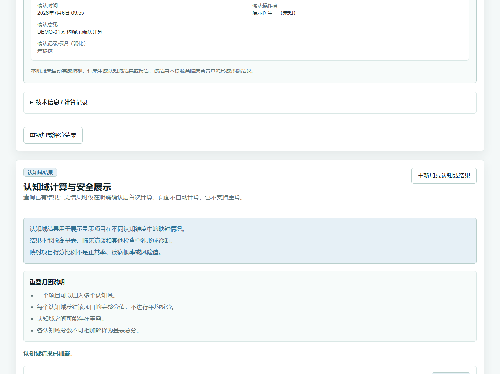
临床报告草稿、确认、锁定、来源冻结与归档
临床报告工作流位于访视详情，不在量表实例页面。
DEMO-006：规则化报告草稿
- 打开 DEMO-006 的访视详情，滚动到“访视级临床报告”。
- 查看报告快照、量表评分、认知域摘要和规则化正文。
- 系统草稿由固定服务端规则生成，未使用 AI，也不等同于医生确认。
- 医务人员可在允许的状态下补充医生意见和建议，随后提交确认。
- 医生或管理员完成确认后，报告进入只读的确认状态。
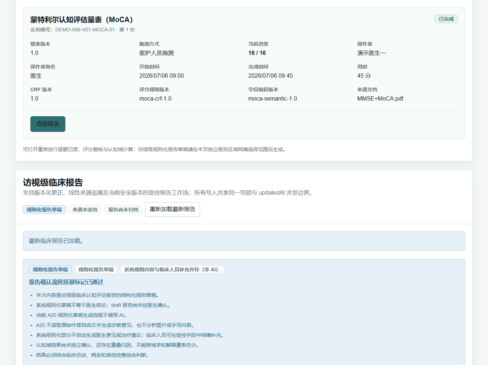
DEMO-007：已锁定、来源冻结并归档
- 打开 DEMO-007 的访视详情，滚动到临床报告区域。
- 查看“已归档报告、已锁定、来源已冻结、报告已归档”状态。
- 报告锁定只锁定报告事实；来源冻结用于固定报告所引用的来源链；归档完成最终只读收口。
- 这些阶段不会自动串联，每一步均须医生或管理员明确操作，并接受服务端权限和状态校验。
报告锁定、来源冻结和归档没有撤销入口。客户试操作前必须确认；试操作后可重新运行 DEMO seed 恢复标准演示环境。
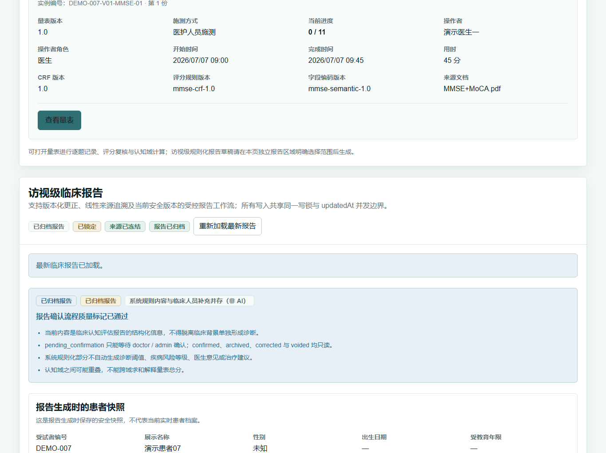
临床报告需由医务人员审核，不等同于自动诊断；审核时应结合临床访谈、病史和其他检查。当前产品没有正式临床报告 PDF、打印和下载产品功能；本文件只是系统操作手册 PDF。
历史评估、报告版本与随访趋势
DEMO-008 有三次访视、三份历史报告和三个可比较趋势点。
查看评估历史与报告版本
- 在患者列表打开 DEMO-008，点击“评估历史”。
- 按访视状态、访视类型、日期或历史量表编码筛选。
- 在每条访视中查看量表、评分和认知域摘要。
- 点击“打开访视”，在访视详情的“临床报告版本”区域查看版本列表；历史报告详情为只读页面。
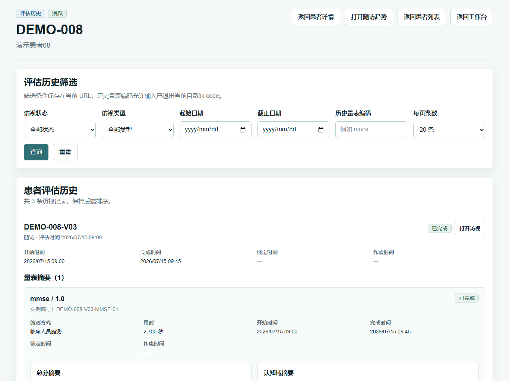
查看随访趋势
- 从患者详情或评估历史点击“随访趋势”。
- 选择 MMSE，设置日期范围和最大访视点数，点击“查询趋势”。
- 查看三次相邻访视的得分比例曲线和下方明细表。
- 可切换认知域指标；只有服务端判定可比较的相邻点才连线，缺失点不会显示为 0。
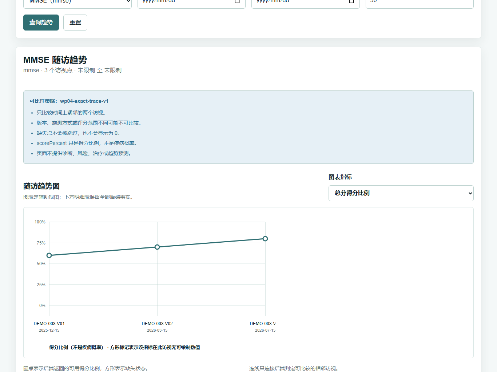
DEMO-001 至 DEMO-008 标准用途
| 场景 | 标准终态 | 推荐演示内容 |
|---|---|---|
| DEMO-001 | 只有患者档案，无访视 | 查看仅有档案的患者，并说明如何创建访视 |
| DEMO-002 | 1 条草稿访视，无量表实例 | 查看未初始化量表的访视，并说明如何初始化 MMSE / MoCA |
| DEMO-003 | MMSE 进行中，部分作答 | 体验 MMSE 部分作答、自动保存和计时 |
| DEMO-004 | MoCA 进行中，部分作答 | 体验 MoCA 部分作答、自动保存和计时 |
| DEMO-005 | MMSE 已提交，评分待复核 | 查看评分待复核流程 |
| DEMO-006 | MoCA 已完成，认知域已计算，报告为草稿 | 查看认知域结果和临床报告草稿 |
| DEMO-007 | MMSE 与评分已锁定，报告已归档 | 查看已锁定、来源冻结并归档的最终报告 |
| DEMO-008 | 3 次已完成访视、3 份报告、3 个趋势点 | 查看多次访视、历史报告和随访趋势 |
当前演示边界
以下能力在当前演示版本中尚未实现，不应包装为已经完成。
当前没有公开用户管理界面
演示账号由演示数据预置，客户无法在当前产品界面中维护用户。
当前没有科研导出
工作台会将科研导出标注为规划中，当前没有可交付的导出流程。
当前没有 AI 辅助解释
规则化报告草稿没有使用 AI；当前不提供 AI 临床解释。
当前没有正式报告 PDF、打印和下载产品功能
本手册 PDF 是操作指南文件，不代表系统已经支持正式临床报告 PDF。
当前首页是轻量入口，不是完整临床工作台
当前首页与工作台只用于导航和能力概览。
未展示原始刺激图片
当前题目界面不展示 MMSE / MoCA 原始刺激图片，本次演示可跳过相关视觉材料。
当前已有的拍照上传和平板手写用于记录题目证据，不等于在题目界面展示原始刺激图片。
演示数据恢复方法
客户自由操作后，由演示人员在仓库的 backend 目录执行现有脚本：
$env:NODE_ENV='development'
$env:DEMO_SEED_CONFIRM='YES'
$env:DEMO_ACCOUNT_PASSWORD='demo123'
npm run seed:demo- 确认当前环境用途为 development。
- 执行上述命令，不传额外参数。
- 确认输出中的实际数据库名为
cogmemory_ad_dev。 - 确认终态为 8 个账号、8 个患者、9 个访视、8 个量表实例、98 个作答、6 个评分、5 个认知域结果、5 个报告、3 个趋势点，且演示账号登录会话为 0。
只允许在本地 development 演示环境恢复 DEMO namespace。实际数据库名不一致时必须立即停止，不得猜测或改连其他数据库。
现场结束检查
- 确认客户没有使用真实患者信息录入演示环境。
- 确认不可逆操作的演示数据已通过 seed 恢复。
- 确认演示账号登录会话已恢复为 0。
- 确认已退出页面，并停止本次演示启动的前端、后端和浏览器进程。
手册结束｜智忆评客户演示操作手册 1.0｜2026-08-04